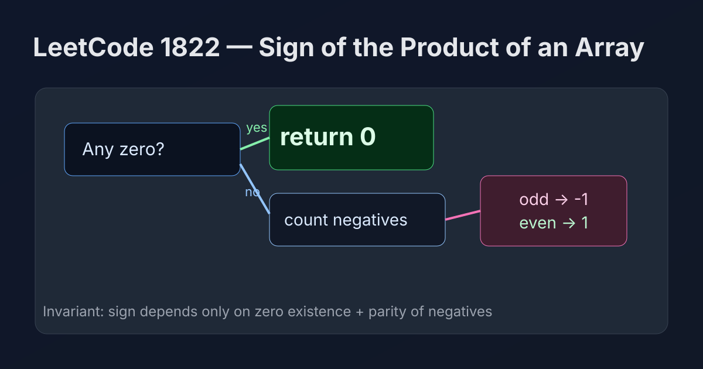

LeetCode 1822: Sign of the Product of an Array (Zero Short-Circuit + Negative Parity)
LeetCode 1822ArrayMathSign ParityToday we solve LeetCode 1822 - Sign of the Product of an Array.
Source: https://leetcode.com/problems/sign-of-the-product-of-an-array/

English
Problem Summary
Given an integer array nums, return the sign of the product of all numbers: 1 if positive, -1 if negative, and 0 if any element is zero.
Key Insight
We never need the actual product (which can overflow). The sign is fully determined by two facts: whether any element is zero, and whether the count of negative numbers is odd or even.
Brute Force and Limitations
Direct multiplication can overflow in fixed-width integer languages. Even if constraints are small, using product is unnecessary work and less robust.
Optimal Algorithm Steps
1) Initialize negCount = 0.
2) Scan each x in nums.
3) If x == 0, return 0 immediately.
4) If x < 0, increment negCount.
5) After scan, return -1 if negCount is odd, else 1.
Complexity Analysis
Time: O(n).
Space: O(1).
Common Pitfalls
- Multiplying values directly and risking overflow.
- Forgetting to short-circuit when zero appears.
- Mis-handling parity check for negative count.
Reference Implementations (Java / Go / C++ / Python / JavaScript)
class Solution {
public int arraySign(int[] nums) {
int negCount = 0;
for (int x : nums) {
if (x == 0) return 0;
if (x < 0) negCount++;
}
return (negCount % 2 == 0) ? 1 : -1;
}
}func arraySign(nums []int) int {
negCount := 0
for _, x := range nums {
if x == 0 {
return 0
}
if x < 0 {
negCount++
}
}
if negCount%2 == 0 {
return 1
}
return -1
}class Solution {
public:
int arraySign(vector<int>& nums) {
int negCount = 0;
for (int x : nums) {
if (x == 0) return 0;
if (x < 0) ++negCount;
}
return (negCount % 2 == 0) ? 1 : -1;
}
};class Solution:
def arraySign(self, nums: list[int]) -> int:
neg_count = 0
for x in nums:
if x == 0:
return 0
if x < 0:
neg_count += 1
return 1 if neg_count % 2 == 0 else -1var arraySign = function(nums) {
let negCount = 0;
for (const x of nums) {
if (x === 0) return 0;
if (x < 0) negCount++;
}
return (negCount % 2 === 0) ? 1 : -1;
};中文
题目概述
给定整数数组 nums，返回所有元素乘积的符号：正数返回 1，负数返回 -1，若存在零则返回 0。
核心思路
不需要真的计算乘积。乘积符号只由两件事决定：是否出现 0，以及负数个数的奇偶性。
暴力解法与不足
直接相乘会有溢出风险（尤其在定长整型语言中），而且本题只关心符号，这样做不必要。
最优算法步骤
1）初始化 negCount = 0。
2）遍历数组元素 x。
3）若 x == 0，立即返回 0。
4）若 x < 0，negCount++。
5）遍历结束后，若 negCount 为奇数返回 -1，否则返回 1。
复杂度分析
时间复杂度：O(n)。
空间复杂度：O(1)。
常见陷阱
- 直接乘法导致潜在溢出。
- 遇到 0 没有立即返回。
- 负数个数奇偶判断写错。
多语言参考实现（Java / Go / C++ / Python / JavaScript）
class Solution {
public int arraySign(int[] nums) {
int negCount = 0;
for (int x : nums) {
if (x == 0) return 0;
if (x < 0) negCount++;
}
return (negCount % 2 == 0) ? 1 : -1;
}
}func arraySign(nums []int) int {
negCount := 0
for _, x := range nums {
if x == 0 {
return 0
}
if x < 0 {
negCount++
}
}
if negCount%2 == 0 {
return 1
}
return -1
}class Solution {
public:
int arraySign(vector<int>& nums) {
int negCount = 0;
for (int x : nums) {
if (x == 0) return 0;
if (x < 0) ++negCount;
}
return (negCount % 2 == 0) ? 1 : -1;
}
};class Solution:
def arraySign(self, nums: list[int]) -> int:
neg_count = 0
for x in nums:
if x == 0:
return 0
if x < 0:
neg_count += 1
return 1 if neg_count % 2 == 0 else -1var arraySign = function(nums) {
let negCount = 0;
for (const x of nums) {
if (x === 0) return 0;
if (x < 0) negCount++;
}
return (negCount % 2 === 0) ? 1 : -1;
};
Comments